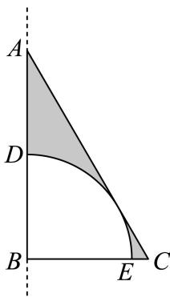
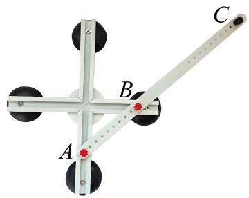
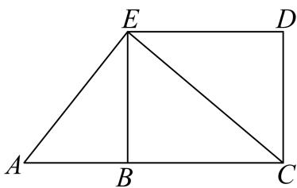
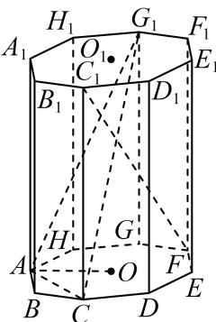
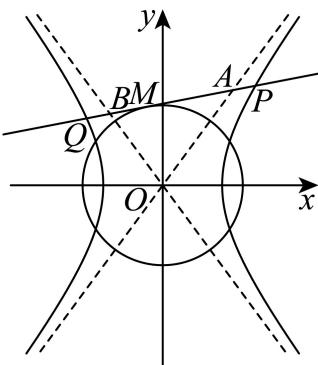

填空题
按本区原卷题号顺序排列。
杨浦 · 第1题 ★☆☆☆☆ · 教师预估
已知集合A = {1, 2, 3, 4}， B={x∣1<x<4} ，则A ⋂ B=
杨浦 · 第2题 ★☆☆☆☆ · 教师预估
不等式 x−2x+1< 0的解集为
杨浦 · 第3题 ★☆☆☆☆ · 教师预估
函数y = sin2x的最小正周期是
杨浦 · 第4题 ★☆☆☆☆ · 教师预估
已知 sinθ=53，则 cos2θ=______。
杨浦 · 第5题 ★☆☆☆☆ · 教师预估
已知 ∣a>0,b>0,a+b=2 , ab的最大值为
杨浦 · 第6题 ★★☆☆☆ · 教师预估
本题资料或解析有待核事项，预览不可作为已审定成品。
(x−x1) 6 的二项展开式中的常数项为
杨浦 · 第7题 ★★☆☆☆ · 教师预估
已知复数z满足 ∣z−1+i∣=1 ，其中i为虚数单位，则|z|的最小值为
杨浦 · 第8题 ★★☆☆☆ · 教师预估
不等式 ∣x+3∣+∣a−x∣>6 对一切实数x恒成立，则实数a的取值范围为
杨浦 · 第9题 ★★☆☆☆ · 教师预估
本题资料或解析有待核事项，预览不可作为已审定成品。
植物社团的同学观察一株植物的生长情况，为了解植物高度y（单位：厘米）与生长期x（单位：天）之间的关系，随机统计了某4天的植物高度，并制作了如下对照表：
| 生长期 x（天） |
3 |
9 |
11 |
17 |
| 植物高度 y（厘米） |
2.4 |
3.4 |
3.8 |
5.2 |
由表中数据可得回归方程 y=a^x+b^ 中 a^=0.2，试预测生长期是30天时，植物高度约为 ______ 厘米。
a^=∑i=1nxi2−nxˉ2∑i=1nxiyi−nxˉyˉ,b^=yˉ−a^xˉ.
杨浦 · 第10题 ★★★☆☆ · 教师预估
本题资料或解析有待核事项，预览不可作为已审定成品。
如图，点D､E分别是直角三角形ABC的边AB､AC上的点，斜边 AC=E 扇形的弧DE相切，已知AC=4,BC=2 ，则阴影部分绕直线AB旋转一周所形成的几何体的体积为

杨浦 · 第11题 ★★★☆☆ · 教师预估
如图，阿基米德椭圆规是由基座､带孔的横杆､两条互相垂直的空槽､两个可动滑块A､B组成的一种绘图工具，横杆的一端C上装有铅笔，假设两条互相垂直的空槽和带孔的横杆都足够长，将滑块A､B固定在带孔的横杆上，令滑块A在中一条空槽上滑动，滑块B在另一条空槽上滑动，铅笔C随之运动就能画出椭圆.当A､B之间的距离为14厘米时，若需要画出一个离心率为 54 的椭圆，则B､C之间的距离为 .厘米.

杨浦 · 第12题 ★★★★☆ · 教师预估
由若干个多边形所覆盖的区域，称为这些多边形的并集，例如图中，梯形ACDE是 △ACE 与矩形BCDE的并集.已知n是正整数，在平面直角坐标系 xOyH ，直线 ∴ln 的方程为 y=−2nx+n, ，若直线ln 交x轴于点 An ，交y轴于点 Bn ，则 △A1OB1,△A2OB2,⋅⋅⋅,△A10OB10 的并集，其面积为

选择题
按本区原卷题号顺序排列。
杨浦 · 第13题 ★★☆☆☆ · 教师预估
△ABC中， sin¨A=sinB′ ”是“A = B”的（ ）条件.
A. 充分非必要
B. 必要非充分
C. 充要
D. 既非充分也非必要
杨浦 · 第14题 ★☆☆☆☆ · 教师预估
3名同学报名参加社团活动，有4个社团可以报名，这些社团招收人数不限，但每位同学只能报名其中1个社团，则这3位同学可能的报名结果共有（ ）种.
A. 6
B. 24
C. 64
D. 81
杨浦 · 第15题 ★★★☆☆ · 教师预估
本题资料或解析有待核事项，预览不可作为已审定成品。
已知 、 、 是单位圆上的三个点，若 AB∣=2 ，则 AB⋅BC 的最大值为（ ）.
A. 2
B. 1+22
C. 2+1
D. 2−1
杨浦 · 第16题 ★★★★☆ · 教师预估
本题资料或解析有待核事项，预览不可作为已审定成品。
设A是由k个二次函数组成的集合，对于连续的正整数1,2,3,⋯,2025，存在二次函数
y=fi(x)∈A(1≤i≤2025,i∈Z,y=fi(x) 可重复)，使得f1 (1), f2 (2), f3 (3), ⋯ , f2025 (2025)是等差数列，则k的最小可能值是（ ）.
A. 507
B. 1013
C. 1519
D. 2025
解答题
按本区原卷题号顺序排列。
杨浦 · 第17题 ★★★☆☆ · 教师预估
本题资料或解析有待核事项，预览不可作为已审定成品。
已知函数 y=f(x) 是定义在R上的偶函数.
(1) (6分)当 x∈[0,+∞) 时， f(x)=log2(x+1) ，求 x∈(−∞,0) 时， y=f(x) 的表达式；
(2) (8分)当 x∈[0,+∞) 时， f(x)=x3+2025x ，若实数t满足 f(3t−2)<f(t−1) ，求t的取值范 围.
杨浦 · 第18题 ★★★☆☆ · 教师预估
座落于杨浦滨江的世界技能博物馆由百年历史文化保护建筑改建而成，其中的支柱保留了原有的正八棱柱，既考虑了结构力学优势，又体现了对历史建筑的尊重和传承.如图， O1,O 分别为正八棱柱的上下两个底面的中心，已知 ∣OA=1,AA1=4

(1) (6分)求证： BC⊥C1F ；
(2) (8分)求点O到平面 ACG1 的距离.
杨浦 · 第19题 ★★★★☆ · 教师预估
本题资料或解析有待核事项，预览不可作为已审定成品。
为弘扬中华民族传统文化、增强民族自豪感，某学校开展中华古诗词背诵比赛，分为初赛和复赛.全校同学都参加了初赛，并随机抽取一个班级进行初赛成绩统计，已知该班级共有40位学生，他们的初赛分数的频率分布直方图如图所示：

(1) (4分)计算b的值，并估计该校这次初赛的平均分数.
(2) (4分)初赛分数达到80及以上的同学，称为优秀参赛选手，现从班级中随机选出2位同学，用X代表其中的优秀参赛选手人数，求X的分布；
(3) (6分)为增加比赛的趣味性，复赛规则如下：复赛试题将从题库中随机抽取，每位参赛选手将有机会回答填空、选择和简答各1题；每答对1题得1分，答错或不答得0分，每位选手可以自行选择回答问题的顺序，若答对一题可继续答下一题，直到3题全部答完；若答错或不答则比赛结束例如：选手甲可自行按“简答—填空—选择”顺序答题，甲答对第一题得1分，并继续回答第二题且答错得0分，结束比赛，总分为1分.
小杨作为优秀参赛选手，代表班级参加复赛.根据他初赛的答题正确频率，可估计他填空、选择和简答的答题正确概率分别为：
| 题型 |
填空 |
选择 |
简答 |
| 答题正确概率 |
80% |
90% |
80% |
若小杨每次答题的结果都相互独立，那么为尽量在比赛中获得较高分数，小杨应该采用怎样的答题顺序？请说明理由.
杨浦 · 第20题 ★★★★★ · 教师预估
本题资料或解析有待核事项，预览不可作为已审定成品。
已知双曲线Γ的标准方程为 x2−2y2=1 ，点P是双曲线Γ右支上的一个动点.

(1) (4分)求双曲线Γ的焦点坐标和渐近线方程；
(2) (6分)过点P分别向两条渐近线作垂线，垂足为点 P1,P2 ，求− PP1⋅PP2 的值；
(3) (8分)若 ∣OP∣>2, ，如图，过P作圆 O:x2+y2= 2的切线l，切点为M，交双曲线Γ的左支于 点Q，分别交两条渐近线于点A､B.设 ∣PQ∣=λ∣AB∣ ，求实数λ的取值范围
杨浦 · 第21题 ★★★★★ · 教师预估
本题资料或解析有待核事项，预览不可作为已审定成品。
已知函数y = f(x)的导函数为 y=f′(x) ，若函数 ⋅y=f(x) 的定义域为R，且不等式 f(x)>f′(x) )对任意 x˙∈R, 成立，则称函数 ⋅y=f(x) 是“超导函数”.
(1) (4分)判断 f(x)=ex+1 是否为“超导函数”，并说明理由；
(2) (6分)若函数 [y=g(x)÷y=h(x) 都是“超导函数”，且对任意 x˙∈R ，都有 h′(x)>0,g′(x)<0 ， ∃F(x)=g(x)h(x) ，求证：函数 y=F(x) 是“超导函数”；
(3) (8分)已知函数 y=φ(x) 是“超导函数”且 φ(1)=e: ，若有且仅有一个实数t满足
φ(lnt+1−at)=elnt+1−at ，求a的取值范围.